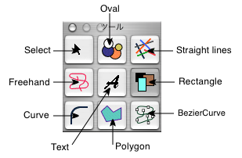

"Tools" menu in "Tools panel" command.
Click the Tools panel of individual tools.
Shows that you have chosen is highlighted.Until you click another tool button, the button's function will continue. 